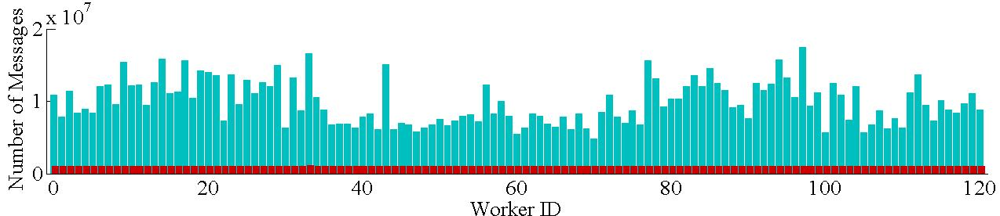
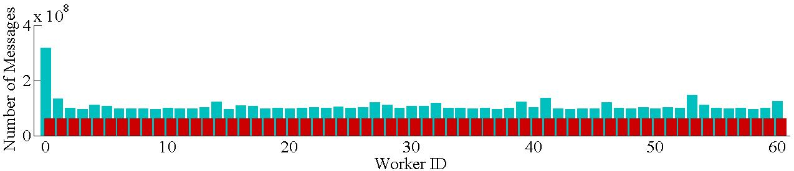

Pregel+ is not just another open-source Pregel implementation, but a substantially improved distributed graph computing system with effective message reduction. Compared with existing Pregel-like systems, Pregel+ provides simpler programming interface and yet achieves higher computational efficiency. We give ample examples and detailed tutorials to demonstrate how to program in Pregel+ and deploy Pregel+ in a distributed environment. Pregel+ is also a better choice for researchers who want to change the system to support new functionalities, as the design of Pregel+ is much simpler and more flexible than most other Pregel-like systems.
Pregel+ supports two effective message reduction techniques: (1)vertex mirroring and (2)a new request-respond paradigm. These techniques not only reduce the total number of messages exchanged through the network, but also bound the number of messages sent/received by any vertex, especially for processing power-law graphs and (relatively) dense graphs.
● Running Hash-Min, an algorithm for computing connected components of a small-diameter graph, over the BTC dataset in a cluster with 1 master machine and 15 slave machines each running 1 worker.
| Pregel+ | Giraph | GraphLab |
| 49 seconds | 261 seconds | 408 seconds |
● Running Hash-Min over the BTC dataset in a cluster with 1 master machine and 15 slave machines each running 8 workers.
| Pregel+ | Pregel+ with Mirroring | Giraph | GraphLab |
| 27 seconds | 10 seconds | Out-of-memory | 159 seconds |

(Number of messages sent by each worker using Pregel+, blue bars — ordinary mode, red bars — mirroring)
● Running S-V, an algorithm for computing connected components of a large-diameter graph, over the USA road network in a cluster with 1 master machine and 15 slave machines each running 4 workes.
| Pregel+ | Pregel+ with Request-Respond Paradigm | Giraph |
| 261 seconds | 138 seconds | 559 seconds |

(Number of messages sent by each worker using Pregel+, blue bars — ordinary mode, red bars — request-respond paradigm)